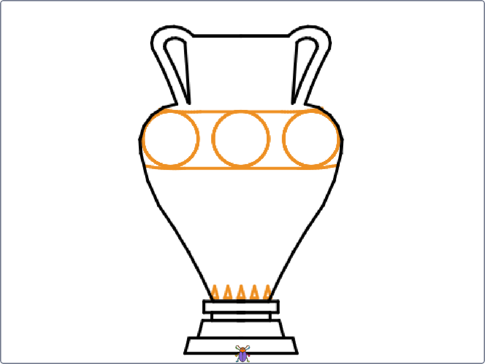
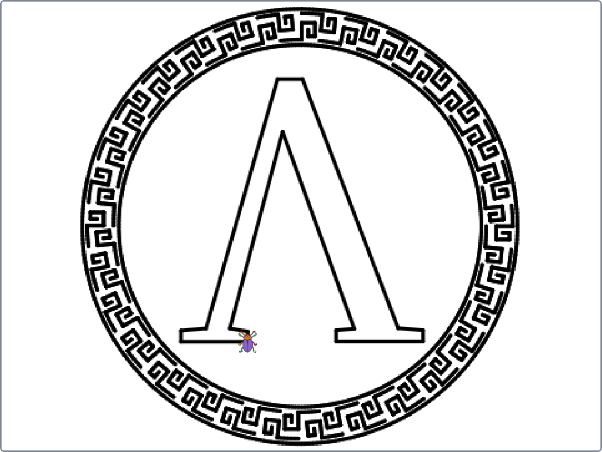
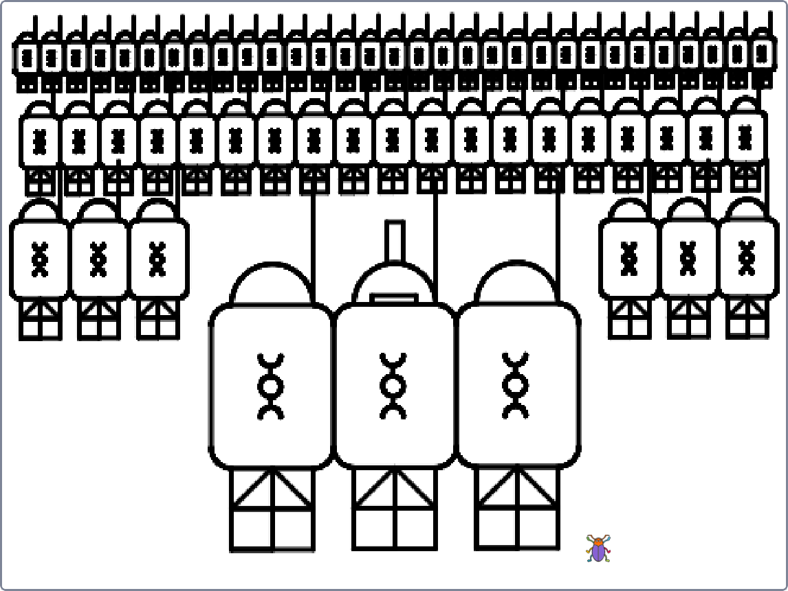
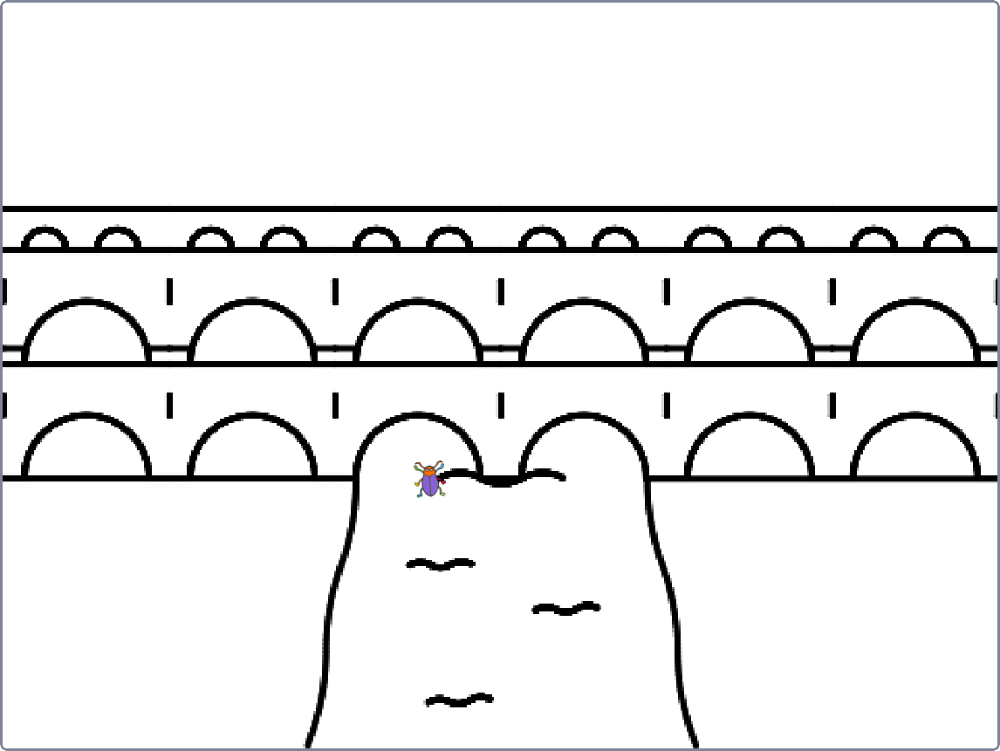
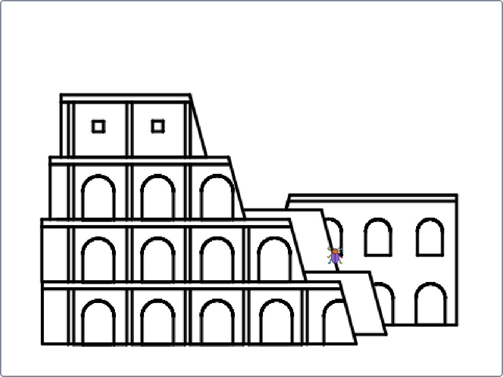
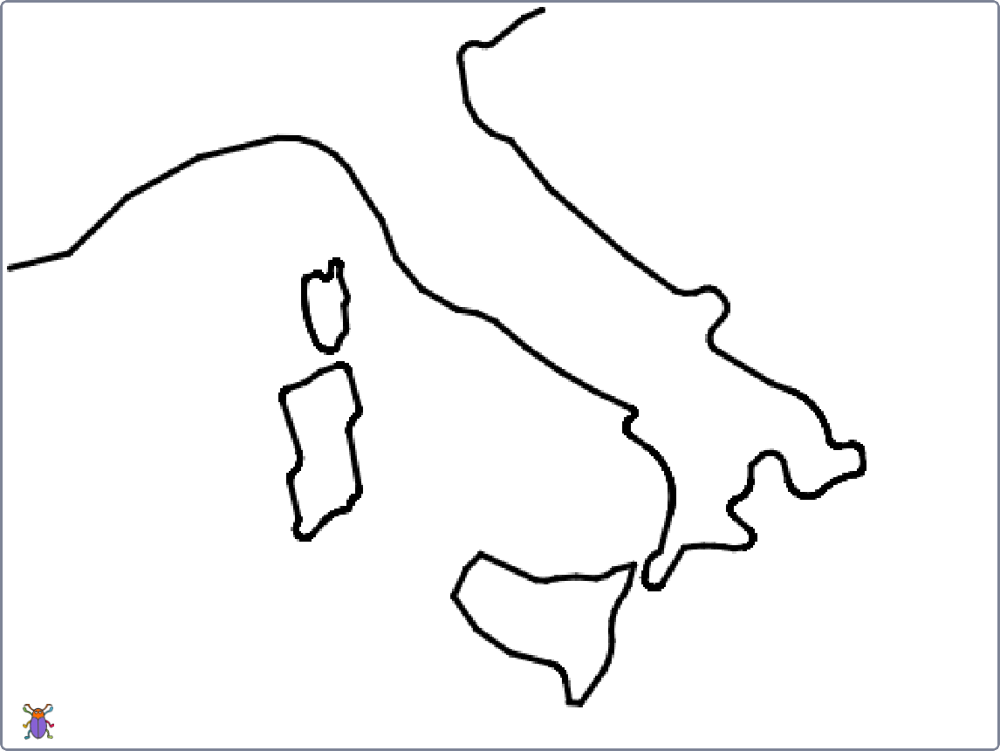
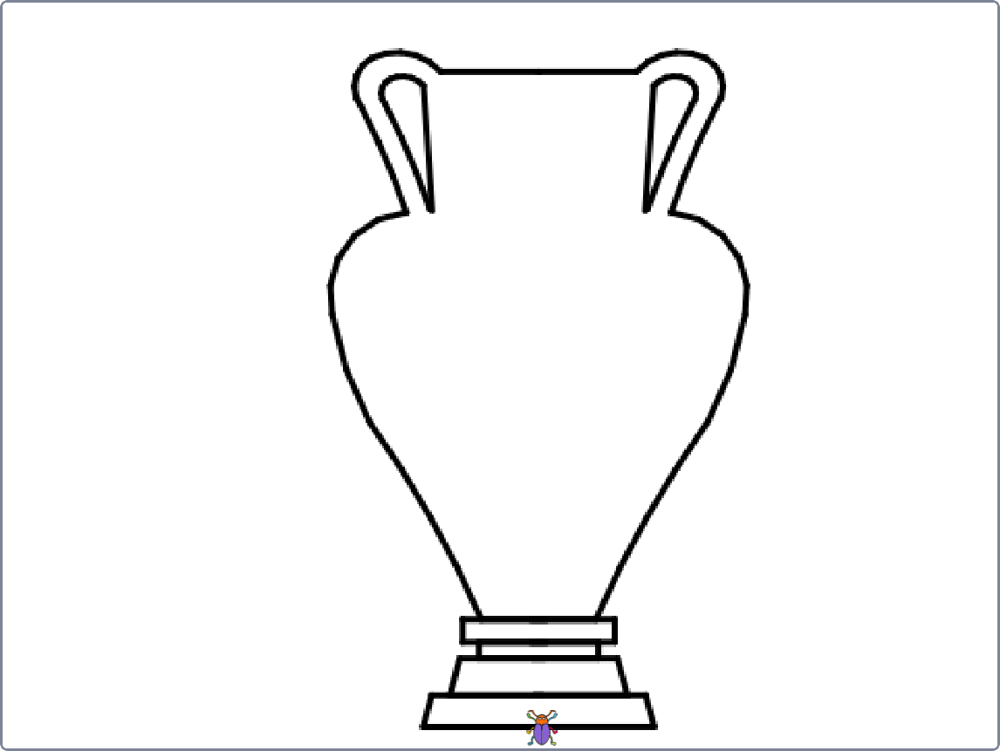
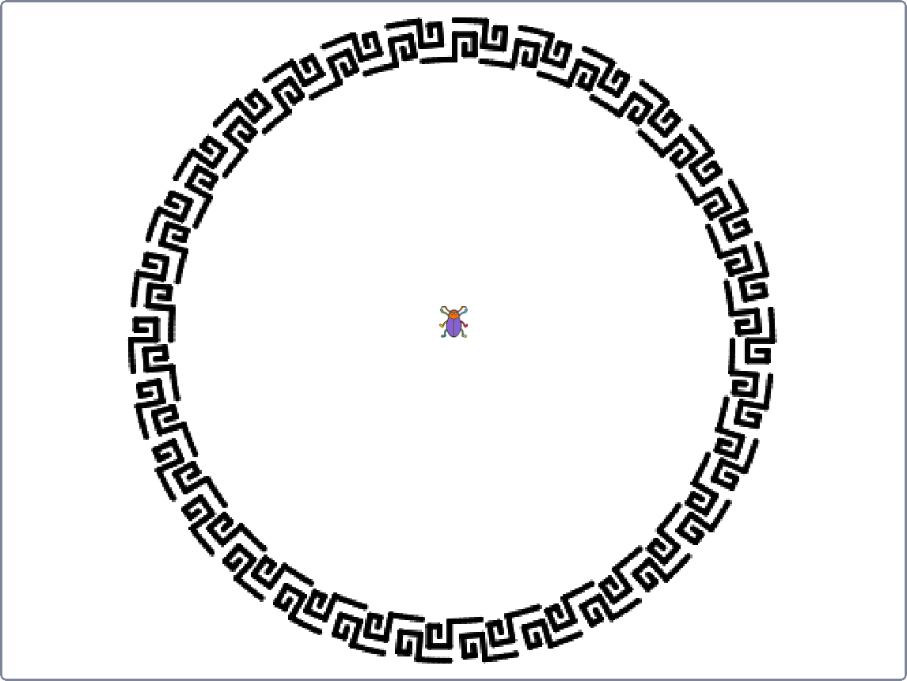
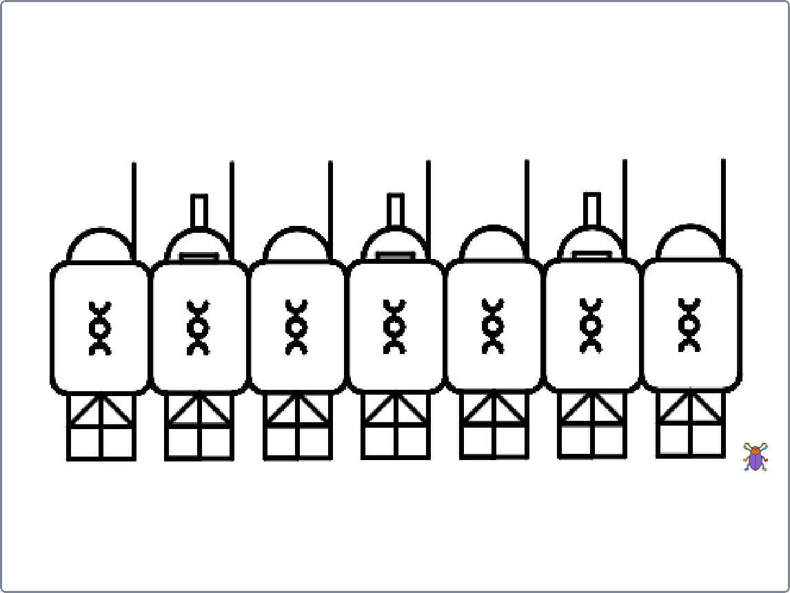
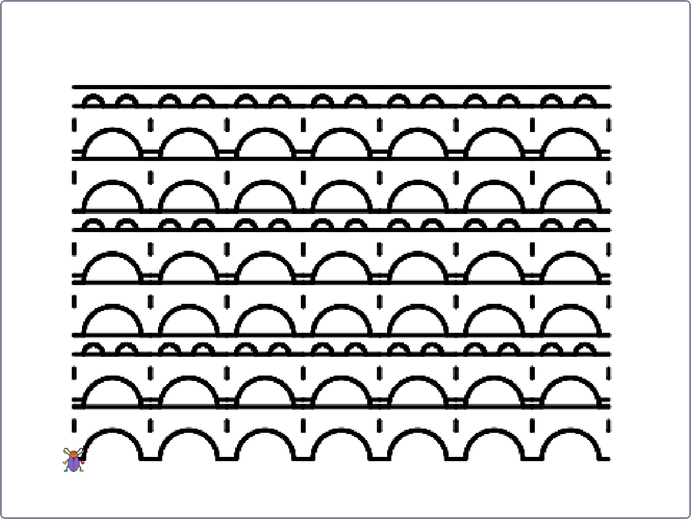

Programozási nyelvek 1.
Beadandók
Tartalom
Teknőcgrafika: Antikvitás
Játékfejlesztés: Pokoltúra
Teknőcgrafika: Antikvitás
Elkészítendő egy Scratch-projekt, amely egy általad választott témakörbe tartozó 6 ikont képes megjeleníteni.










Játékfejlesztés: Pokoltúra
Önállóan vagy pármunkában készítendő egy játékot megvalósító Scratch-projekt, és a hozzá tartozó, az értékelést segítő dokumentáció.